Galeria
A página procura mostrar capturas de tela, desenhos feitos pela comunidade e etc, a ideia é mostrar um pouco mais do jogo por meio de imagens, apesar de que muito do contexto de algumas imagens está em outras páginas.
Imagens do Jogo
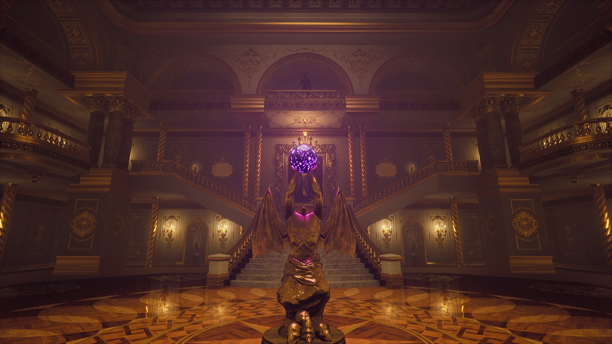
Captura de Tela da Terceira FaseMinha Autoria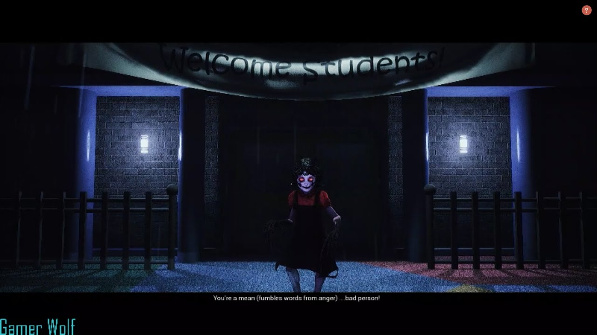
Captura de Tela da Segunda Fase @LenGamerWolf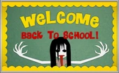
Baner presente na Segunda Fase Dark Deception Wiki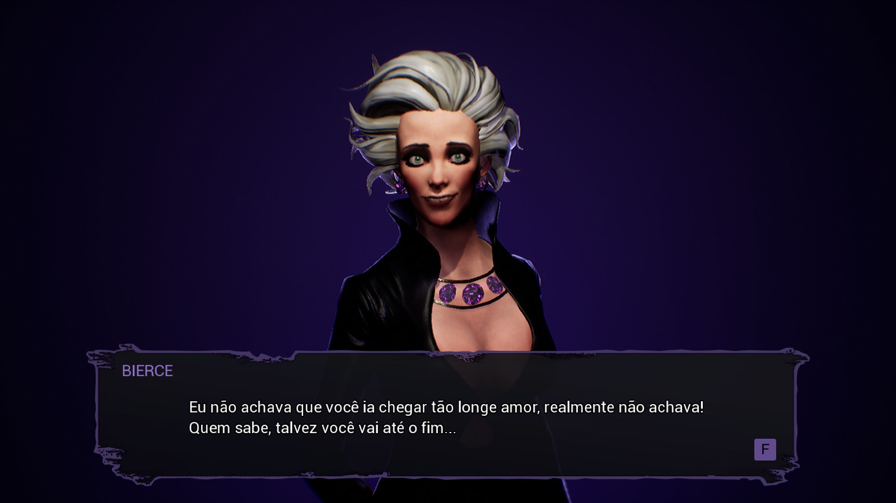
Captura de Tela da BierceMinha AutoriaDesenhos da comunidade
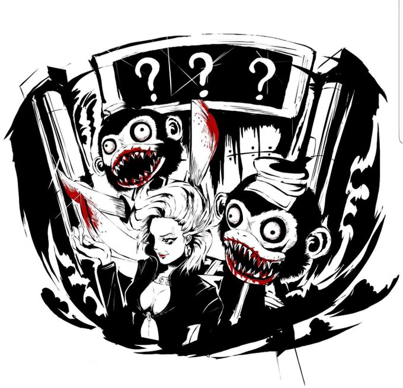
Desenho da Primeira Fase@yomoyomo_art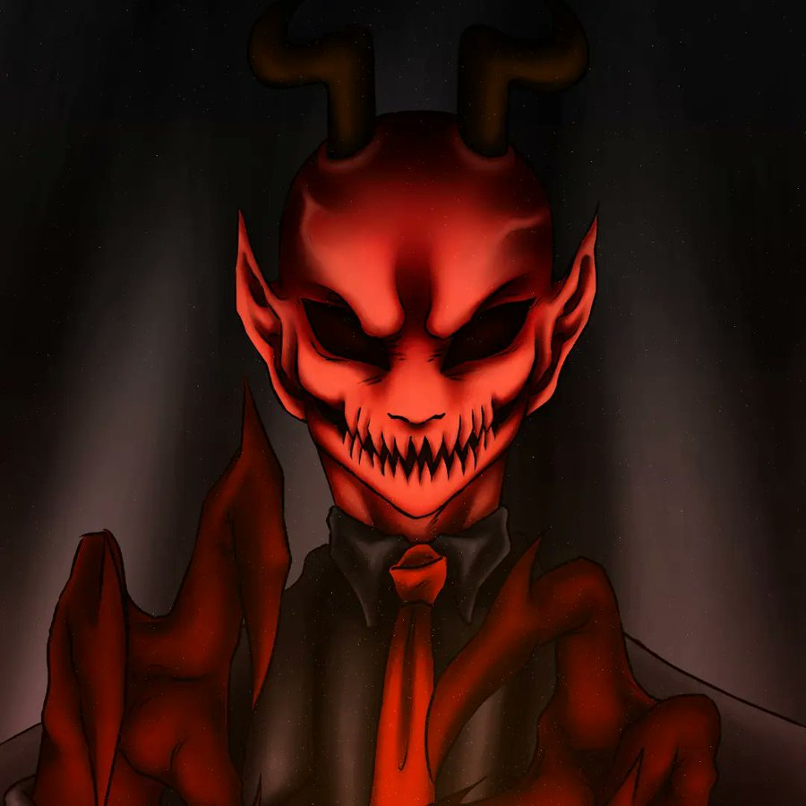
Desenho de Malak @Khokizu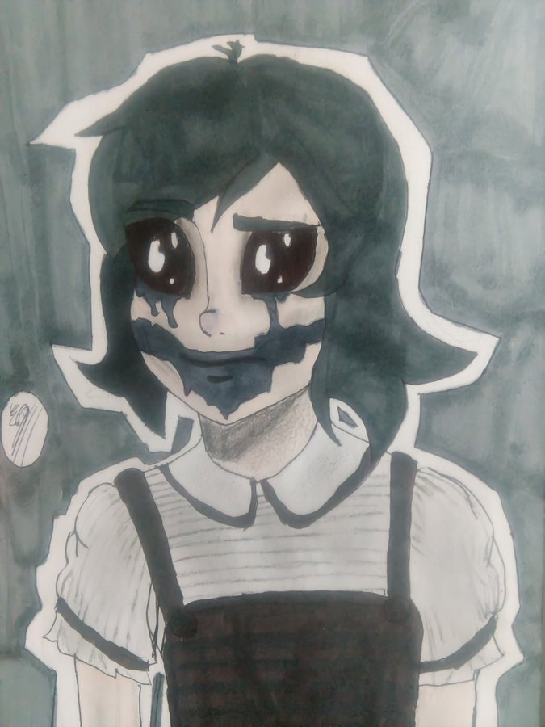
Desenho da Agatha@movoneiroEG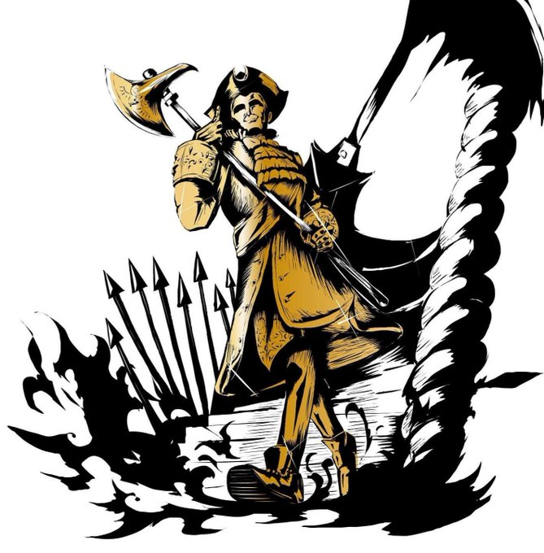
Desenho de Gold Watchers @yomoyomo_artVersões antigas do jogo
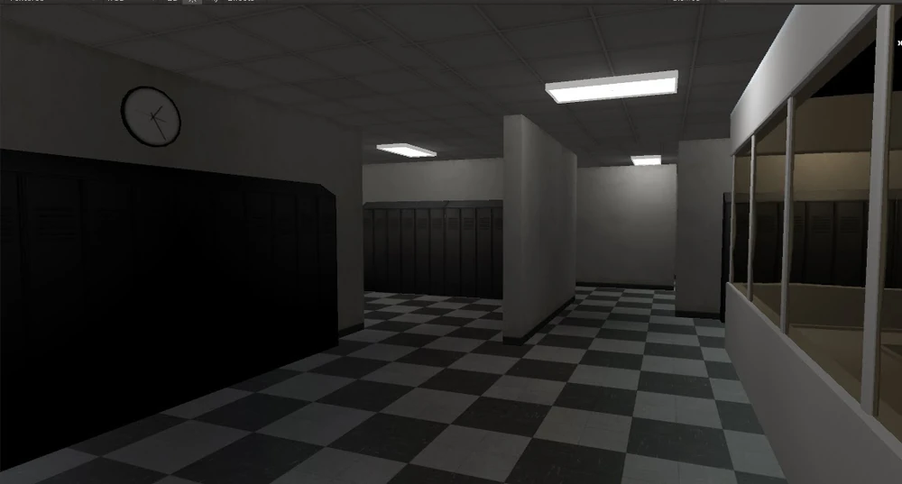
Versão Antiga da Segunda FaseDark Deception Wiki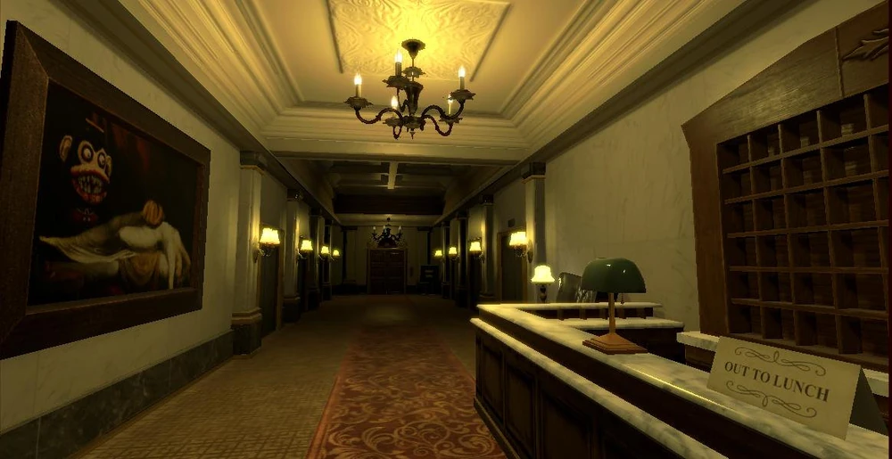
Versão Antiga da Primeira FaseDark Deception Wiki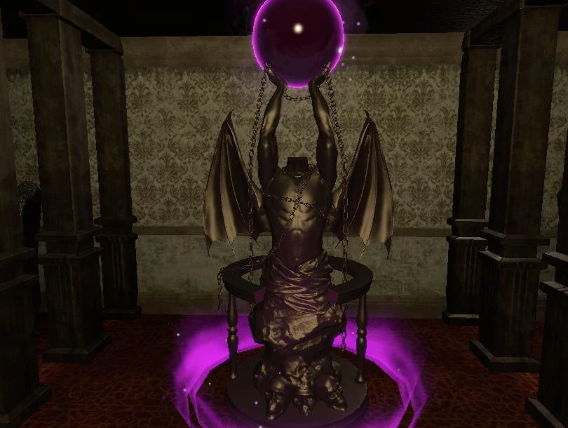
Versão Antiga da Estátua do AnelDark Deception Wiki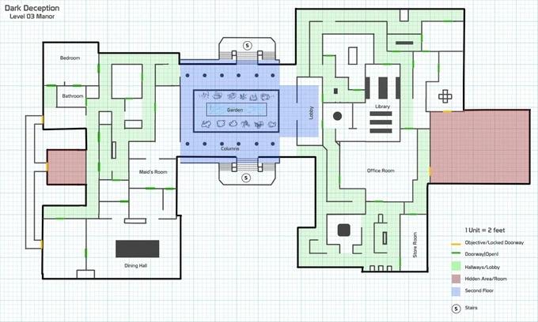
Planta Antiga da Terceira FaseDark Deception Wiki